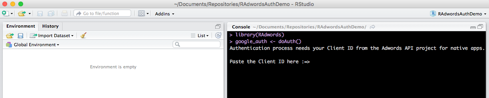
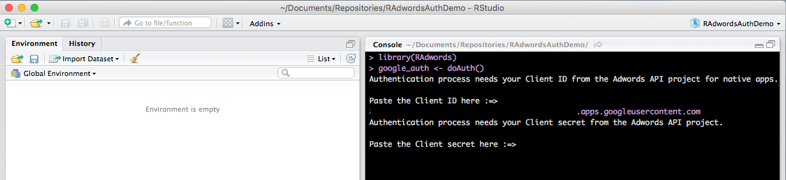
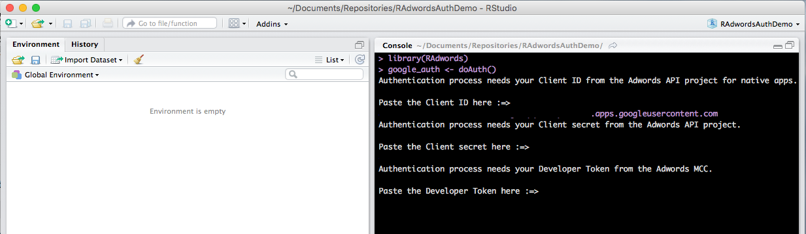
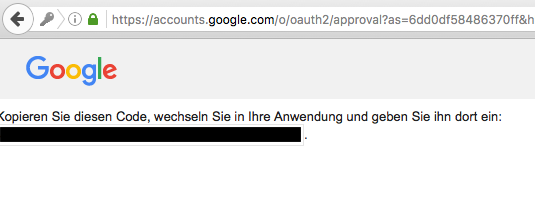

Authentication
Assuming that you completed the steps in the requirement section, you should be equipped with the following:
- Client ID
- Client Secret
- AdWords Developer Token
You now can start with the authentication process with doAuth(). Best practice is to save the credential information in a R object.
Moreover doAuth() allows to save the credential information in a hidden local file in the current working directory. This can be really handy if you want to load data from the API in a later instance or run batch jobs since you do not have to run the whole authentication process manually again.
Start the authentication and follow the instruction in the R console:
library(RAdwords)
google_auth <- doAuth()
-
Insert the client id and press enter:

-
Insert the client secret and press enter:

-
Insert the AdWords developer token and press enter:

-
Web browser opens automatically and provides auth token after Google sign in:
Note: Please use same Google login as API project and Adwords MCC.

Copy the string and paste it back in the R console and press enter.
Congratulations! You authenticated you R project successfully!
In your R session there is a object google_auth which contains an access token and a refresh token. The access token is valid for one hour. When the access toke expires it can be updated with the refresh token. The package will take care of this automatically.
Note: Common practice is to organize your R code within a RStudio project.